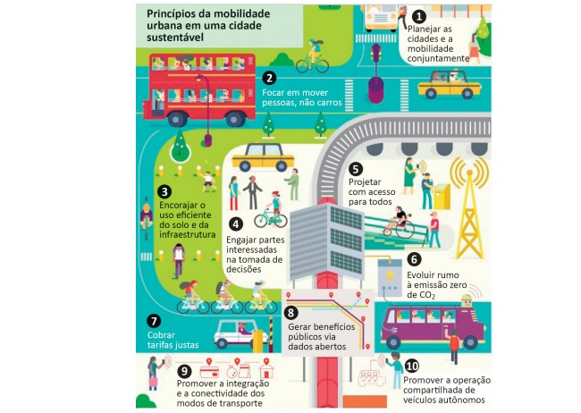

Disponível em: https://www.thinglink.com/scene/980079663516745730?button Source=viewLimits>. Acesso em: 26 jul. 2018 (adaptado).
Considerando o infográfico apresentado, avalie as afirmações a seguir.
I. A distribuição da área plantada com transgênicos no mundo reflete o nível de desenvolvimento econômico dos países.
II. O engajamento dos cidadãos nos debates e no planejamento das cidades é essencial para o desenvolvimento de projetos urbanos viáveis, acessíveis e sustentáveis.
III. É necessário que o planejamento de uma cidade sustentável esteja focado na fluidez dos veículos automotores autônomos, na diversidade de opções de mobilidade e nas modalidades compartilhadas de transporte.
IV. A utilização de painéis solares para abastecer veículos e a diminuição da emissão de gases poluentes em uma cidade sustentável são metas ainda distantes de serem atingidas no Brasil,devido à primazia dos meios de transportes movidos a combustíveis fósseis.
A. I e II.
B. I e IV.
C. III e IV.
D. I, II e III.
E. II, III e IV.
Fonte: As questões desse simulado foram obtidas na prova disponibilizada no site do INEP - Instituto Nacional de Estudos e Pesquisas Educacionais Anísio Teixeira.
Créditos: Inep - Enade
Créditos de imagem: ENADE - Tecnologia em Logística, 2018.